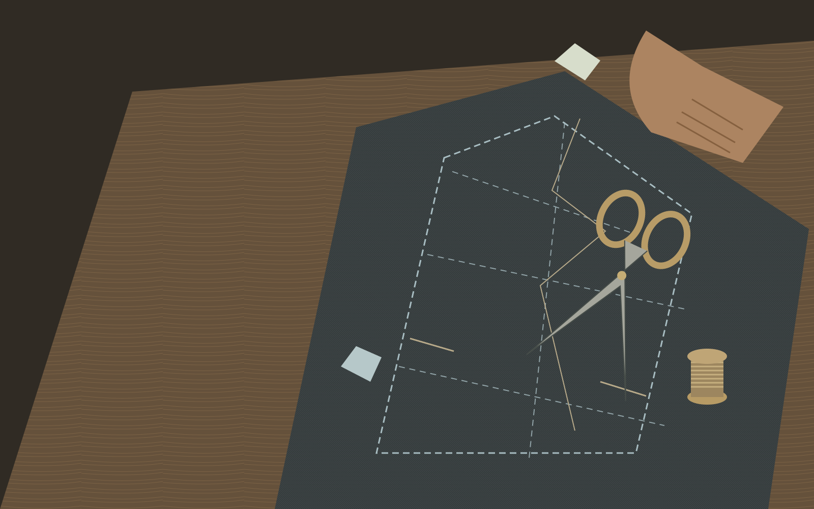

Consultation and measure
Ninety minutes. We take around thirty measurements, discuss cloth and cut, and photograph your posture from four angles. You leave without committing to anything.

Edinburgh · Bespoke tailors since 1979 · Cut on the premises
A small bespoke tailoring house on Thistle Street. Every pattern is cut by hand for one person, every garment is made in the room behind the shop, and nothing leaves this building to be finished elsewhere.
THE WORKROOM / AN ORIGINAL ILLUSTRATED STUDY
A useful distinction
Made-to-measure adjusts an existing block pattern to your measurements. Bespoke means a pattern is drafted from nothing, for you, on paper, and kept on file with your name on it. The first takes a fortnight and costs less. The second takes eleven weeks and fits differently, particularly if your shoulders are uneven, which almost everyone's are.
The process
A pattern is a record of a person.
Ninety minutes. We take around thirty measurements, discuss cloth and cut, and photograph your posture from four angles. You leave without committing to anything.
Your pattern is drafted by hand on paper and cut into the cloth. This is the step that cannot be rushed and the step that most of the price pays for.
The garment is loosely stitched together with no lining and one sleeve. It will look alarming. This is normal, and it is where the real fitting happens.
Lining in, both sleeves on, buttonholes marked. Refinements here are small and precise.
Hand-finished buttonholes, pressed, and a final try-on. Adjustments in the first year are free.
Supplied workshop process and service terms are illustrative, not a delivery or free-alteration guarantee. No measurements or photographs are collected here.
Cloth
The hand. The weight.
The way it falls.
Select a swatch to add a cloth preference to your local fitting draft.
Original CSS swatch studies, not actual mill samples or colour guarantees. Composition percentages and sourcing relationships are unverified.
What we make
Jacket and trousers, fully canvassed, hand-padded lapels.
With a matching or contrasting waistcoat, six or five button.
Grosgrain or barathea facings, no vents, side adjusters instead of belt loops.
Chesterfield, polo, or a covert coat. Made from 480g cloth upwards.
Half or quarter-lined, patch pockets, softer shoulder than a suit jacket.
Bespoke pattern, single needle, hand-attached collar. Minimum order of four.
Pricing
Price is driven by two things: the cloth, which ranges from about £90 to £340 a metre, and the hours. A jacket takes between forty-five and sixty hours of hand work.
Supplied indicative figures, not a quote. Exact cloth, cut and work are agreed at consultation.
Two-piece suit: from £3,200. Typical £3,600.
| Garment | From | Typical |
|---|---|---|
| Two-piece suit | £3,200 | £3,600 |
| Three-piece suit | £3,800 | £4,200 |
| Dinner suit | £3,900 | £4,400 |
| Overcoat | £3,400 | £3,900 |
| Sport coat | £2,400 | £2,700 |
| Shirt, per shirt in a four | £280 | £320 |
Time, properly allowed
Allow ninety minutes for a first appointment. Bring a jacket you like the fit of and one you do not, because the second is more useful. We do not take a deposit until after the consultation, and if we think you would be better served by made-to-measure elsewhere, we will tell you.
Arrange a conversationA second life
We alter garments not made here, and we remodel inherited suits — recutting a father's jacket to fit a son is the job we enjoy most. Bring it in and we will tell you honestly whether the cloth has enough life left in it.
The workshop
Three cutters and four tailors work in the room behind the shop. Nothing is sent abroad, nothing is machine-finished where it should be hand-finished, and the person who cut your pattern is the person you will speak to at every fitting.
Staffing, location and production statements are supplied fictional brand copy.
Visit · By appointment
Edinburgh EH2 1EN
Tue–Fri 10:00–18:00 · Sat 10:00–16:00
Travelling fittings: London, first Thursday and Friday monthly · Manchester, second Tuesday monthly · Dublin, quarterly. Dates are illustrative, not live availability.